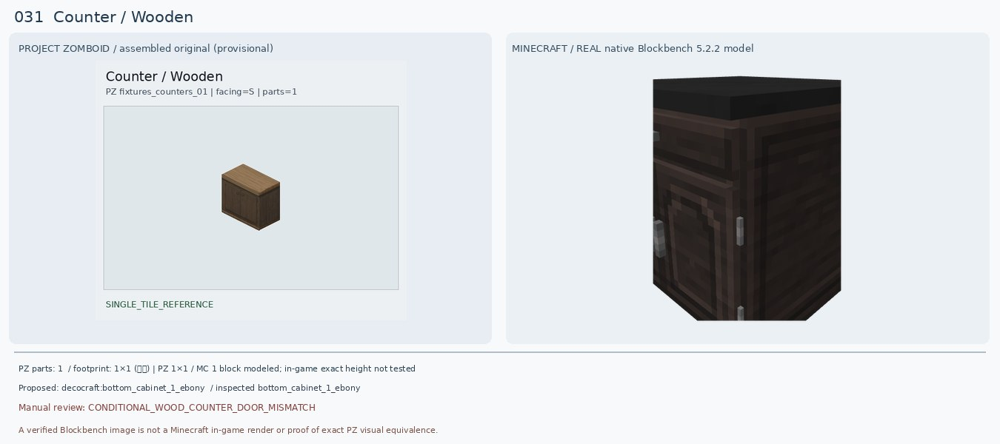
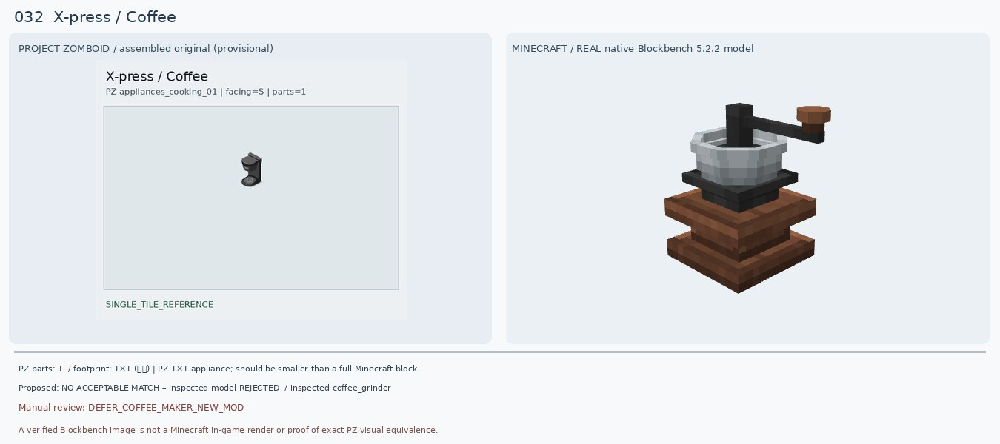
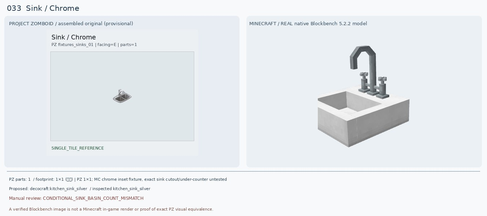
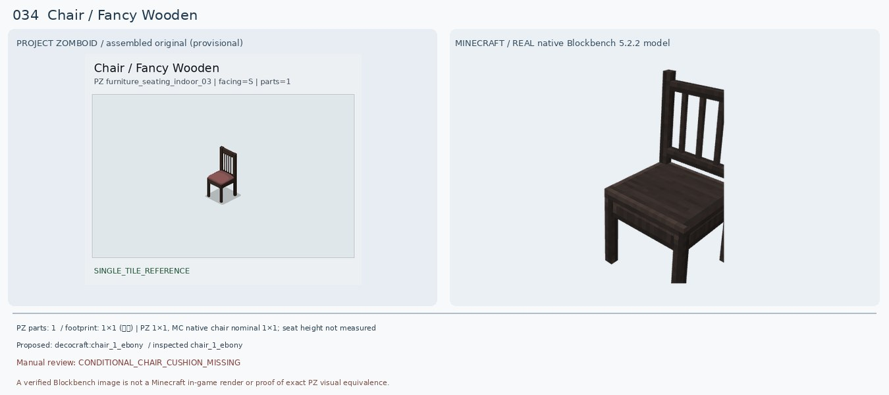
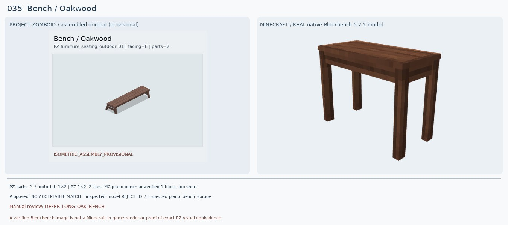
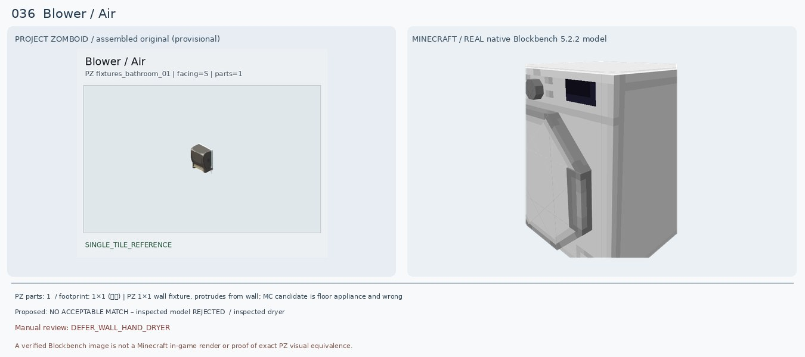
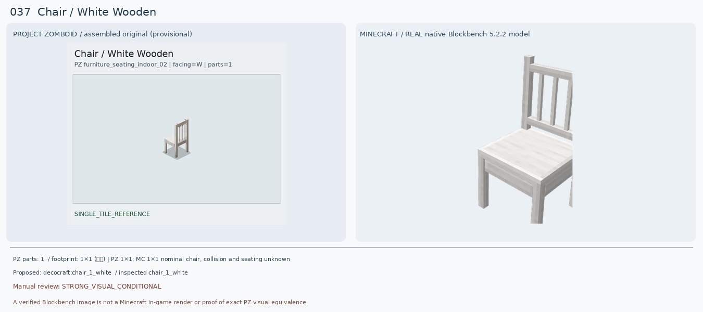
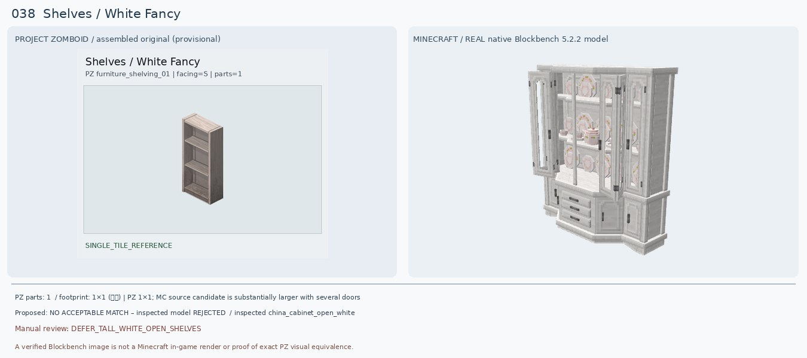
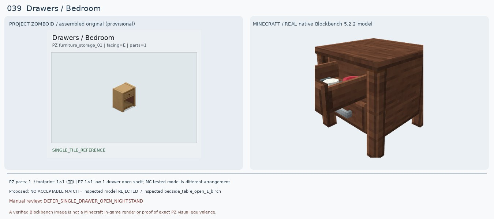
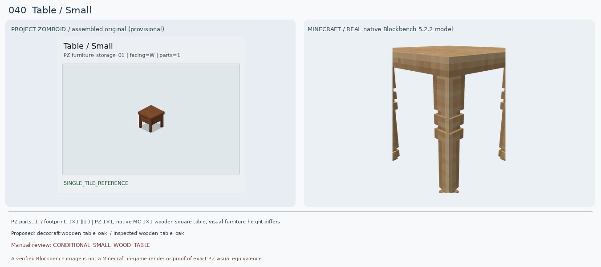

Counter / Wooden
검수: CONDITIONAL_WOOD_COUNTER_DOOR_MISMATCH
실제 선정 후보: decocraft:bottom_cabinet_1_ebony
실제로 렌더해 비교한 모델: decocraft:bottom_cabinet_1_ebony
다른 후보: decocraft:bottom_cabinet_1_spruce
크기: PZ 1×1 / MC 1 block modeled; in-game exact height not tested
원본 외형: 1×1 dark walnut wooden two-door sideboard counter; medium brown top and paired small knobs
판정 이유: PZ는 어두운 갈색 나무의 양문 하부장과 목재 상판. 새 Decocraft Ebony는 어두운 목제 전체 형태는 비슷하지만 실제 원본은 서랍+단문(또는 한 장 문), 검정 상판이라 양문 구조가 다름. Spruce는 목재 갈색이 약간 밝고 흰 상판이어서 대안으로만. 기존 Macaw Dark Oak Counter는 통짜 블록 렌더라 거부.
다음 조치: 목재 2도어 카운터, 같은 1×1 높이/상판을 갖는 모드 검색. 실제 문 구조 비교.
PZ 원본 메타데이터
{"BlocksPlacement": [""], "CanBreak": [""], "CanScrap": [""], "ContainerCloseSound": ["DoorWoodMediumClose"], "ContainerOpenSound": ["DoorWoodMediumOpen"], "ContainerPosition": ["Low"], "ContainerPutSound": ["DoorWoodMediumTransferItem"], "ContainerTakeSound": ["DoorWoodMediumTransferItem"], "CountertopAttach": [""], "CustomName": ["Counter"], "Facing": ["S"], "GenericCraftingSurface": ["true"], "GroupName": ["Wooden"], "IsLow": [""], "IsMoveAble": [""], "IsTable": [""], "Material": ["Wood"], "Material2": ["Nails"], "PickUpLevel": ["2"], "PickUpTool": ["Hammer"], "PickUpWeight": ["100"], "PlaceTool": ["Hammer"], "Surface": ["35"], "container": ["counter"], "solidtrans": [""]}
X-press / Coffee
검수: DEFER_COFFEE_MAKER_NEW_MOD
실제 선정 후보: 없음 — 후속 검토
실제로 렌더해 비교한 모델: decocraft:coffee_grinder
다른 후보: CoffeeCraft (1.20.1 Forge) — Coffee Maker Black; actual item ID and model unverified
크기: PZ 1×1 appliance; should be smaller than a full Minecraft block
원본 외형: Compact modern black countertop drip coffee maker, top water chamber and circular base/cup tray
판정 이유: 기존 대나무 원탁 매칭은 가구 종류 자체가 틀려 폐기. 추가 확인한 Decocraft Coffee Grinder는 나무 손잡이 수동 분쇄기라 전기 드립 커피메이커가 아님. Minecraft 1.20.1 Forge CoffeeCraft 모드에 커피메이커 블록이 있다는 공개 자료는 확인했으나, 구체적인 블록 ID와 원본 모델 외형은 직접 렌더하지 못해서 보류.
다음 조치: https://modrinth.com/mod/coffeecraft — 배포 JAR에서 Coffee Maker Black 모델·텍스처를 실제 Blockbench로 열고 PZ 외형/크기 확인.
PZ 원본 메타데이터
{"BlocksPlacement": [""], "CanScrap": [""], "CustomName": ["X-press"], "Facing": ["S"], "GroupName": ["Coffee"], "IsMoveAble": [""], "IsSurfaceOffset": [""], "IsTableTop": [""], "IsoType": ["IsoStove"], "Material": ["Electric"], "Material2": ["MetalScrap"], "MaterialType": ["Plastic"], "PickUpWeight": ["40"], "ScrapSize": ["Small"], "Surface": ["34"]}
Sink / Chrome
검수: CONDITIONAL_SINK_BASIN_COUNT_MISMATCH
실제 선정 후보: decocraft:kitchen_sink_silver
실제로 렌더해 비교한 모델: decocraft:kitchen_sink_silver
다른 후보: decocraft:square_sink_silver
크기: PZ 1×1; MC chrome inset fixture, exact sink cutout/under-counter untested
원본 외형: 1×1 chrome stainless double-basin rectangular inset kitchen sink with curved faucet dividing two bowls
판정 이유: PZ 원본은 은색 좌우 2조 볼과 높은 곡선 수전. 새 Kitchen Sink Silver는 은색 재질·수전과 설치 용도는 가깝지만 단일 볼 형태라 쌍볼 구조를 잃음. 기존 Paladin Basic Sink는 일부 평판만 렌더돼 무효. 쌍볼 모드 모델을 계속 검색하며 이번 후보는 조건부만.
다음 조치: 실물 1×1 2조 싱크대의 배치·기하 확인. 마크 바닐라 가마솥 두 개는 2블록으로 공간이 늘어나므로 기본 자동 대체 금지.
PZ 원본 메타데이터
{"CanBreak": [""], "CanScrap": [""], "CustomName": ["Sink"], "Facing": ["E"], "GroupName": ["Chrome"], "IsMoveAble": [""], "IsSurfaceOffset": [""], "IsTableTop": [""], "Material": ["Plumbing"], "Material2": ["Pipes"], "Material3": ["Sink"], "PickUpTool": ["Wrench"], "PickUpWeight": ["50"], "PlaceTool": ["Wrench"], "ScrapSize": ["Small"], "SinkType": ["Metal"], "Surface": ["34"], "attachedSurface": [""], "waterAmount": ["20"], "waterMaxAmount": ["20"], "waterPiped": [""]}
Chair / Fancy Wooden
검수: CONDITIONAL_CHAIR_CUSHION_MISSING
실제 선정 후보: decocraft:chair_1_ebony
실제로 렌더해 비교한 모델: decocraft:chair_1_ebony
다른 후보: decocraft:chair_1_cherry
크기: PZ 1×1, MC native chair nominal 1×1; seat height not measured
원본 외형: 1×1 dark wooden four-legged tall dining chair, five slat back and mauve/purple-pink padded cushion
판정 이유: 기존 Paladin Oak Chair Classic Black은 모형 좌석과 등받이가 빠진 부분 렌더로 무효. 새 Decocraft Chair 1 Ebony는 진한 나무 프레임, 네 다리, 등받이 세로살 구성이 비슷하지만 분홍·보랏빛 방석이 없고 색상 자체도 더 검정. Cherry는 프레임이 너무 연분홍. 미세한 좌석 색상은 커스텀 리텍스처 없이는 불일치.
다음 조치: 와인색 방석이 있는 짙은 목제 세로살 의자 모드 모델 재검색. 1×1 형태 확인.
PZ 원본 메타데이터
{"BedType": ["badBed"], "BlocksPlacement": [""], "CanScrap": [""], "CustomName": ["Chair"], "Facing": ["S"], "GroupName": ["Fancy Wooden"], "IsLow": [""], "IsMoveAble": [""], "Material": ["Wood"], "Material2": ["Nails"], "MaterialType": ["Wood"], "PickUpWeight": ["75"], "ScrapSize": ["Small"], "SeatMaterial": ["Wooden"], "Surface": ["17"], "bed": [""], "chairS": [""]}
Bench / Oakwood
검수: DEFER_LONG_OAK_BENCH
실제 선정 후보: 없음 — 후속 검토
실제로 렌더해 비교한 모델: decocraft:piano_bench_spruce
다른 후보: handcrafted:oak_bench (source model not independently rendered)
크기: PZ 1×2, 2 tiles; MC piano bench unverified 1 block, too short
원본 외형: PZ 1×2 two-tile completed long backless oak-plank bench with narrow continuous slats and splayed end legs
판정 이유: PZ는 2타일을 합친 긴 갈색 야외 등받이 없는 벤치. 이전 Decocraft Gym Bench는 운동기구로 부적합. 새 Decocraft Decobench는 실제 목공 작업대라 전혀 다른 물건. Piano Bench Spruce는 긴 좌석 형태를 일부 갖추나 실물 길이가 짧고 피아노용 단일 스툴에 가까워 거절. Handcrafted Oak Bench는 소스 블록 ID가 존재하지만 현재 비교 렌더 미확인.
다음 조치: Handcrafted oak_bench/2×1 조합 가능 여부를 실제 모델과 게임 배치 검증; 바닐라 참나무 덫문+울타리 조합(인접 공간 점유) 테스트.
PZ 원본 메타데이터
{"BedType": ["badBed"], "BlocksPlacement": [""], "CanScrap": [""], "CustomName": ["Bench"], "Facing": ["E"], "ForceSingleItem": [""], "GroupName": ["Oakwood"], "IsLow": [""], "IsMoveAble": [""], "Material": ["Nails"], "Material2": ["Wood"], "PickUpWeight": ["150"], "ScrapSize": ["Small"], "SeatMaterial": ["Wooden"], "SnowTile": ["object_snow_overlay_04_214", "object_snow_overlay_04_215"], "SpriteGridPos": ["0,0", "0,1"], "Surface": ["12"], "bed": [""], "chairE": [""]}
Blower / Air
검수: DEFER_WALL_HAND_DRYER
실제 선정 후보: 없음 — 후속 검토
실제로 렌더해 비교한 모델: decocraft:dryer
다른 후보: wall-mounted air hand dryer from other Forge 1.20.1 bathroom mod
크기: PZ 1×1 wall fixture, protrudes from wall; MC candidate is floor appliance and wrong
원본 외형: Compact dark wall-mounted electric restroom hand/air dryer with front nozzle/round outlet
판정 이유: PZ 원본은 작은 검정 벽걸이 공기 건조기. 기존 `decocraft:dryer`는 커다란 세탁 건조기이며 원본 `.bbmodel`이 정상 표시돼도 종류가 완전히 다르므로 반려. 확인된 Decocraft JAR에는 정확한 hand dryer 모델이 없음.
다음 조치: Minecraft 1.20.1 Forge 욕실 장식 모드에서 벽걸이 핸드 드라이어 자산 확인; 바닐라 어두운 버튼/헤드 조합은 3D 흡사도 제한.
PZ 원본 메타데이터
{"CanScrap": [""], "CustomName": ["Blower"], "Facing": ["S"], "GroupName": ["Air"], "IsHigh": [""], "IsMoveAble": [""], "Material": ["Electric"], "Material2": ["MetalScrap"], "MaterialType": ["Plastic"], "MoveType": ["WallObject"], "PickUpTool": ["Hammer"], "PickUpWeight": ["50"], "PlaceTool": ["Hammer"], "ScrapSize": ["Small"], "attachedN": [""]}
Chair / White Wooden
검수: STRONG_VISUAL_CONDITIONAL
실제 선정 후보: decocraft:chair_1_white
실제로 렌더해 비교한 모델: decocraft:chair_1_white
다른 후보: decocraft:chair_2_white
크기: PZ 1×1; MC 1×1 nominal chair, collision and seating unknown
원본 외형: Simple white-painted four-leg dining chair with thin spindle/slatted upright backrest and unupholstered seat
판정 이유: PZ의 흰색 나무 의자는 곧은 4다리와 세로살 등받이·평평한 좌석. Decocraft Chair 1 White는 실제 원본 20큐브 모델에서 흰 목재·세로살 4다리 형태가 상당히 닮아 기존 Paladin 반쪽 렌더보다 적합. Chair 2 White는 X등받이여서 더 다르다. 곡면·등받이 비례는 차이.
다음 조치: 게임 실배치 좌석 높이/충돌과 흰색 변형의 게임 텍스처 일치 확인.
PZ 원본 메타데이터
{"BedType": ["badBed"], "BlocksPlacement": [""], "CanScrap": [""], "CustomName": ["Chair"], "Facing": ["W"], "GroupName": ["White Wooden"], "IsLow": [""], "IsMoveAble": [""], "Material": ["Wood"], "Material2": ["Nails"], "MaterialType": ["Wood"], "PickUpWeight": ["75"], "ScrapSize": ["Small"], "SeatMaterial": ["Wooden"], "Surface": ["17"], "bed": [""], "chairW": [""]}
Shelves / White Fancy
검수: DEFER_TALL_WHITE_OPEN_SHELVES
실제 선정 후보: 없음 — 후속 검토
실제로 렌더해 비교한 모델: decocraft:china_cabinet_open_white
다른 후보: mcwfurnitures:stripped_birch_bookshelf (actual imported preview not confirmed)
크기: PZ 1×1; MC source candidate is substantially larger with several doors
원본 외형: Tall narrow whitewashed wood three-tier open empty shelving/bookcase, no glass doors or decorations
판정 이유: 원본은 빈 3단 선반이 보이는 날렵한 흰 목재 책장. 기존 Decocraft Dish Rack White는 접시걸이로 틀렸고, 새 Decocraft China Cabinet Open White는 유리문·장식품·하부 서랍이 있는 거대한 찬장이어서 다른 가구. Modular Desk Storage White도 가로형 책상 장식품이다. Macaw's Stripped Birch Bookshelf는 후보 ID만 확인되어 완성 렌더 비교 전으로 보류.
다음 조치: Macaw's bookshelves 원본 모델 상속을 완전히 렌더하거나 Wan의 빈 흰색 3단 책장 모델·바닐라 덫문 조합 확인.
PZ 원본 메타데이터
{"BlocksPlacement": [""], "CanBreak": [""], "CanScrap": [""], "ContainerCapacity": ["40"], "ContainerPutSound": ["ShelfWoodTransferItem"], "ContainerTakeSound": ["ShelfWoodTransferItem"], "CustomName": ["Shelves"], "Facing": ["S"], "GroupName": ["White Fancy"], "IsMoveAble": [""], "Material": ["Wood"], "Material2": ["Screws"], "MaterialType": ["Wood"], "PickUpTool": ["Hammer"], "PickUpWeight": ["200"], "PlaceTool": ["Hammer"], "ScrapSize": ["Large"], "Surface": ["80"], "container": ["shelves"], "solid": [""]}
Drawers / Bedroom
검수: DEFER_SINGLE_DRAWER_OPEN_NIGHTSTAND
실제 선정 후보: 없음 — 후속 검토
실제로 렌더해 비교한 모델: decocraft:bedside_table_open_1_birch
다른 후보: handcrafted:birch_side_table (actual 3D source preview not verified)
크기: PZ 1×1 low 1-drawer open shelf; MC tested model is different arrangement
원본 외형: Light honey-oak compact bedside cabinet with single small top drawer and completely OPEN lower cubby
판정 이유: 원본은 연한 갈색 1단 서랍과 아래가 빈 오픈칸 1개. Decocraft Bedside Table Open 1 Oak/Birch는 위 서랍이 열린 상태이며 아래에 또 손잡이/서랍이 있어 원본 오픈 선반과 구조가 다름. Open 2는 아랫서랍만 열린 2단 서랍장이어서 더 나쁨. 기존 Macaw acacia bookshelf drawer는 판 한 장만 표시된 불완전 렌더라 무효.
다음 조치: 한 서랍+하단 개방 선반 1×1 nightstand 모드 모델 직접 검증; 바닐라 원목 덫문+배럴 조합도 현실적 블록 점유 검토.
PZ 원본 메타데이터
{"BlocksPlacement": [""], "CanBreak": [""], "CanScrap": [""], "ContainerCapacity": ["10"], "ContainerCloseSound": ["DrawerWoodClose"], "ContainerOpenSound": ["DrawerWoodOpen"], "ContainerPutSound": ["DrawerWoodTransferItem"], "ContainerTakeSound": ["DrawerWoodTransferItem"], "CustomName": ["Drawers"], "Facing": ["E"], "GenericCraftingSurface": ["true"], "GroupName": ["Bedroom"], "IsLow": [""], "IsMoveAble": [""], "IsTable": [""], "Material": ["Wood"], "Material2": ["Screws"], "PickUpLevel": ["2"], "PickUpTool": ["Hammer"], "PickUpWeight": ["100"], "PlaceTool": ["Hammer"], "ScrapSize": ["Small"], "Surface": ["34"], "container": ["sidetable"], "solidtrans": [""]}
Table / Small
검수: CONDITIONAL_SMALL_WOOD_TABLE
실제 선정 후보: decocraft:wooden_table_oak
실제로 렌더해 비교한 모델: decocraft:wooden_table_oak
다른 후보: decocraft:wooden_table_cherry
크기: PZ 1×1; native MC 1×1 wooden square table, visual furniture height differs
원본 외형: Small square medium-dark brown wooden table with four straight simple chunky legs and no drawers
판정 이유: PZ는 진갈색 상판과 굵은 직선 네 다리를 가진 작은 정사각 나무 탁자. Decocraft Wooden Table Oak는 네 다리/상판/탁자 역할은 같지만 상판이 밝은 베이지색이고 다리에 장식 링이 많으며 실제 높이·두께도 다름. Cherry는 분홍색이라 더 다름. 기존 Wrought Iron Small Black은 원형 금속 다리라 형태가 틀림.
다음 조치: 진한 목재 심플 4다리 소형 탁자 모드 또는 바닐라 압력판+울타리 배치 검증.
PZ 원본 메타데이터
{"BlocksPlacement": [""], "CanScrap": [""], "ContainerCapacity": ["10"], "ContainerCloseSound": ["DrawerWoodClose"], "ContainerOpenSound": ["DrawerWoodOpen"], "ContainerPutSound": ["DrawerWoodTransferItem"], "ContainerTakeSound": ["DrawerWoodTransferItem"], "CustomName": ["Table"], "Facing": ["W"], "GenericCraftingSurface": ["true"], "GroupName": ["Small"], "IsLow": [""], "IsMoveAble": [""], "IsTable": [""], "Material": ["Wood"], "Material2": ["Screws"], "PickUpTool": ["Hammer"], "PickUpWeight": ["50"], "PlaceTool": ["Hammer"], "ScrapSize": ["Small"], "Surface": ["15"], "container": ["sidetable"], "solidtrans": [""]}